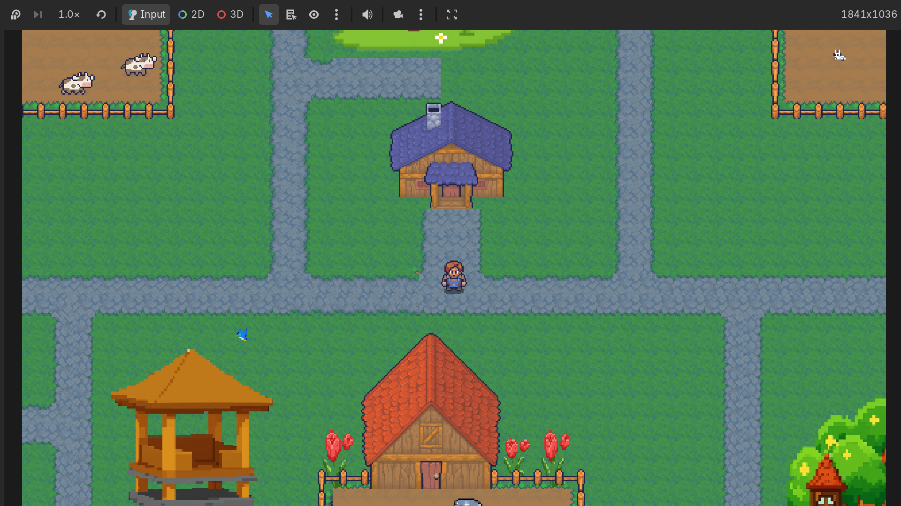

Berikut beberapa projek yang pernah atau sedang saya kerjakan.

Website sederhana untuk menampilkan biodata saya dan projek yang pernah
atau sedang saya kembangkan.
Repository :
Lihat di GitHub
Alamat URL :
Klik disini

Website ini dibuat sebagai tugas mata kuliah Matematika Diskrit untuk
mengimplementasikan konsep faktorial ke dalam sebuah website sederhana.
Pengguna dapat memasukkan angka dan melihat hasil perhitungan faktorial
secara langsung.
Repository :
Lihat di GitHub
Alamat URL :
Klik disini

Game Based Learning merupakan project tugas kuliah yang dibuat dalam
bentuk game edukatif untuk anak Sekolah Dasar. Game ini menggabungkan
materi pelajaran dengan konsep permainan sebagai salah satu media untuk
membantu anak belajar secara interaktif dan menyenangkan.
Repository :
Lihat di GitHub
| RINGKASAN PROJECT | |||
|---|---|---|---|
| No. | Nama Project | Detail Project | |
| teknologi | status | ||
| 1 | Website Portofolio | HTML & CSS | Dalam Pengembangan |
| 2 | Website Algoritma Faktorial | HTML, CSS & JS | Selesai |
| 3 | Game Based Learning | Godot,Python & Git | |
© 2026 MFS. Porto